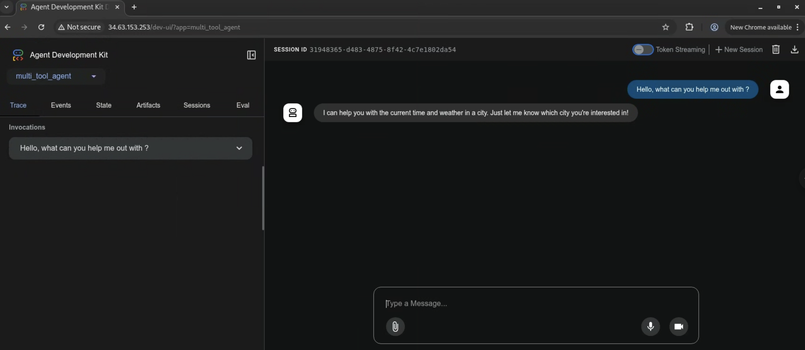

Google Kubernetes Engine (GKE) へのデプロイ¶
GKEは、Google CloudのマネージドKubernetesサービスです。Kubernetesを使用して、コンテナ化されたアプリケーションをデプロイおよび管理できます。
エージェントをデプロイするには、GKE上で実行されているKubernetesクラスタが必要です。Google Cloudコンソールまたはgcloudコマンドラインツールを使用してクラスタを作成できます。
この例では、シンプルなエージェントをGKEにデプロイします。エージェントは、LLMとしてGemini 2.0 Flashを使用するFastAPIアプリケーションになります。環境変数GOOGLE_GENAI_USE_VERTEXAIを使用して、LLMプロバイダーとしてVertex AIまたはAI Studioを使用できます。
環境変数¶
セットアップとインストールガイドで説明されているように、環境変数を設定してください。また、kubectlコマンドラインツールもインストールする必要があります。インストール手順はGoogle Kubernetes Engineドキュメントに記載されています。
export GOOGLE_CLOUD_PROJECT=your-project-id # あなたのGCPプロジェクトID
export GOOGLE_CLOUD_LOCATION=us-central1 # または希望のロケーション
export GOOGLE_GENAI_USE_VERTEXAI=true # Vertex AIを使用する場合はtrueに設定
export GOOGLE_CLOUD_PROJECT_NUMBER=$(gcloud projects describe --format json $GOOGLE_CLOUD_PROJECT | jq -r ".projectNumber")
jqがインストールされていない場合は、次のコマンドを使用してプロジェクト番号を取得できます。
そして、出力からプロジェクト番号をコピーします。
APIと権限の有効化¶
Google Cloudで認証されていることを確認してください（gcloud auth loginおよびgcloud config set project <your-project-id>）。
プロジェクトで必要なAPIを有効にします。これはgcloudコマンドラインツールを使用して行うことができます。
gcloud services enable \
container.googleapis.com \
artifactregistry.googleapis.com \
cloudbuild.googleapis.com \
aiplatform.googleapis.com
gcloud builds submitコマンドで必要とされる、デフォルトのコンピュートエンジンサービスアカウントに必要なロールを付与します。
ROLES_TO_ASSIGN=(
"roles/artifactregistry.writer"
"roles/storage.objectViewer"
"roles/logging.viewer"
"roles/logging.logWriter"
)
for ROLE in "${ROLES_TO_ASSIGN[@]}"; do
gcloud projects add-iam-policy-binding "${GOOGLE_CLOUD_PROJECT}" \
--member="serviceAccount:${GOOGLE_CLOUD_PROJECT_NUMBER}-compute@developer.gserviceaccount.com" \
--role="${ROLE}"
done
デプロイペイロード¶
ADKエージェントワークフローをGoogle Cloud GKEにデプロイすると、以下のコンテンツがサービスにアップロードされます。
- ADKエージェントのコード
- ADKエージェントのコードで宣言されているすべての依存関係
- エージェントが使用するADK APIサーバーのコードバージョン
adk deploy gkeコマンドの--with_uiオプションのようなデプロイ設定で指定しない限り、デフォルトのデプロイにはADK Webユーザーインターフェースライブラリは含まれません。
デプロイオプション¶
エージェントをGKEにデプロイするには、Kubernetesマニフェストを使用して手動でデプロイするか、adk deploy gkeコマンドを使用して自動でデプロイするかのいずれかの方法があります。ご自身のワークフローに最適なアプローチを選択してください。
オプション1： gcloudとkubectlを使用した手動デプロイ¶
GKEクラスタの作成¶
gcloudコマンドラインツールを使用してGKEクラスタを作成できます。この例では、us-central1リージョンにadk-clusterという名前のAutopilotクラスタを作成します。
GKE Standardクラスタを作成する場合は、Workload Identityが有効になっていることを確認してください。Workload Identityは、AutoPilotクラスタではデフォルトで有効になっています。
gcloud container clusters create-auto adk-cluster \
--location=$GOOGLE_CLOUD_LOCATION \
--project=$GOOGLE_CLOUD_PROJECT
クラスタを作成した後、kubectlを使用して接続する必要があります。このコマンドは、kubectlが新しいクラスタの認証情報を使用するように設定します。
gcloud container clusters get-credentials adk-cluster \
--location=$GOOGLE_CLOUD_LOCATION \
--project=$GOOGLE_CLOUD_PROJECT
エージェントの作成¶
LLMエージェントページで定義されているcapital_agentの例を参照します。
続行するには、プロジェクトファイルを次のように構成してください。
your-project-directory/
├── capital_agent/
│ ├── __init__.py
│ └── agent.py # エージェントコード（下記の「Capital Agentの例」を参照）
├── main.py # FastAPIアプリケーションのエントリーポイント
├── requirements.txt # Pythonの依存関係
└── Dockerfile # コンテナのビルド手順
コードファイル¶
your-project-directory/のルートに以下のファイル（main.py, requirements.txt, Dockerfile, capital_agent/agent.py, capital_agent/__init__.py）を作成します。
-
これは
capital_agentディレクトリ内にあるCapital Agentの例です。capital_agent/agent.pyfrom google.adk.agents import LlmAgent # ツール関数を定義 def get_capital_city(country: str) -> str: """指定された国の首都を取得します。""" # 実際のロジックに置き換えてください（例：API呼び出し、データベース検索） capitals = {"france": "Paris", "japan": "Tokyo", "canada": "Ottawa"} return capitals.get(country.lower(), f"すみません、{country}の首都はわかりません。") # エージェントにツールを追加 capital_agent = LlmAgent( model="gemini-2.0-flash", name="capital_agent", # エージェントの名前 description="指定された国の首都に関するユーザーの質問に答えます。", instruction="""あなたは国の首都を提供するエージェントです...（以前の指示テキスト）""", tools=[get_capital_city] # 関数を直接提供 ) # ADKがroot_agentインスタンスを検出します root_agent = capital_agentディレクトリをPythonパッケージとしてマークします。
-
このファイルは、ADKの
get_fast_api_app()を使用してFastAPIアプリケーションを設定します。main.pyimport os import uvicorn from fastapi import FastAPI from google.adk.cli.fast_api import get_fast_api_app # main.pyが配置されているディレクトリを取得 AGENT_DIR = os.path.dirname(os.path.abspath(__file__)) # セッションサービスURIの例（例：SQLite） SESSION_SERVICE_URI = "sqlite+aiosqlite:///./sessions.db" # 例: クイックスタート用のローカルSQLite # CORSで許可されるオリジンの例 ALLOWED_ORIGINS = ["http://localhost", "http://localhost:8080", "*"] # Webインターフェースを提供する場合はweb=True、そうでない場合はFalseに設定 SERVE_WEB_INTERFACE = True # FastAPIアプリインスタンスを取得する関数を呼び出す # エージェントディレクトリ名（'capital_agent'）がエージェントフォルダと一致することを確認 app: FastAPI = get_fast_api_app( agents_dir=AGENT_DIR, session_service_uri=SESSION_SERVICE_URI, allow_origins=ALLOWED_ORIGINS, web=SERVE_WEB_INTERFACE, ) # 必要に応じて、以下にFastAPIのルートや設定を追加できます # 例： # @app.get("/hello") # async def read_root(): # return {"Hello": "World"} if __name__ == "__main__": # Cloud Runから提供されるPORT環境変数を使用し、デフォルトは8080 uvicorn.run(app, host="0.0.0.0", port=int(os.environ.get("PORT", 8080)))注：
agent_dirをmain.pyがあるディレクトリに指定し、Cloud Runとの互換性のためにos.environ.get("PORT", 8080)を使用します。 -
必要なPythonパッケージをリストアップします。
-
コンテナイメージを定義します。
DockerfileFROM python:3.13-slim WORKDIR /app COPY requirements.txt . RUN pip install --no-cache-dir -r requirements.txt RUN adduser --disabled-password --gecos "" myuser && \ chown -R myuser:myuser /app COPY . . USER myuser ENV PATH="/home/myuser/.local/bin:$PATH" CMD ["sh", "-c", "uvicorn main:app --host 0.0.0.0 --port $PORT"]
コンテナイメージのビルド¶
コンテナイメージを保存するために、Google Artifact Registryリポジトリを作成する必要があります。これはgcloudコマンドラインツールを使用して行うことができます。
gcloud artifacts repositories create adk-repo \
--repository-format=docker \
--location=$GOOGLE_CLOUD_LOCATION \
--description="ADK repository"
gcloudコマンドラインツールを使用してコンテナイメージをビルドします。この例では、イメージをビルドし、adk-repo/adk-agent:latestとしてタグ付けします。
gcloud builds submit \
--tag $GOOGLE_CLOUD_LOCATION-docker.pkg.dev/$GOOGLE_CLOUD_PROJECT/adk-repo/adk-agent:latest \
--project=$GOOGLE_CLOUD_PROJECT \
.
イメージがビルドされ、Artifact Registryにプッシュされたことを確認します。
gcloud artifacts docker images list \
$GOOGLE_CLOUD_LOCATION-docker.pkg.dev/$GOOGLE_CLOUD_PROJECT/adk-repo \
--project=$GOOGLE_CLOUD_PROJECT
Vertex AI用Kubernetesサービスアカウントの設定¶
エージェントがVertex AIを使用する場合、必要な権限を持つKubernetesサービスアカウントを作成する必要があります。この例では、adk-agent-saという名前のサービスアカウントを作成し、Vertex AI Userロールにバインドします。
AI Studioを使用してAPIキーでモデルにアクセスしている場合は、この手順をスキップできます。
gcloud projects add-iam-policy-binding projects/${GOOGLE_CLOUD_PROJECT} \
--role=roles/aiplatform.user \
--member=principal://iam.googleapis.com/projects/${GOOGLE_CLOUD_PROJECT_NUMBER}/locations/global/workloadIdentityPools/${GOOGLE_CLOUD_PROJECT}.svc.id.goog/subject/ns/default/sa/adk-agent-sa \
--condition=None
Kubernetesマニフェストファイルの作成¶
プロジェクトディレクトリにdeployment.yamlという名前のKubernetesデプロイメントマニフェストファイルを作成します。このファイルは、GKE上でアプリケーションをどのようにデプロイするかを定義します。
cat << EOF > deployment.yaml
apiVersion: apps/v1
kind: Deployment
metadata:
name: adk-agent
spec:
replicas: 1
selector:
matchLabels:
app: adk-agent
template:
metadata:
labels:
app: adk-agent
spec:
serviceAccount: adk-agent-sa
containers:
- name: adk-agent
imagePullPolicy: Always
image: $GOOGLE_CLOUD_LOCATION-docker.pkg.dev/$GOOGLE_CLOUD_PROJECT/adk-repo/adk-agent:latest
resources:
limits:
memory: "128Mi"
cpu: "500m"
ephemeral-storage: "128Mi"
requests:
memory: "128Mi"
cpu: "500m"
ephemeral-storage: "128Mi"
ports:
- containerPort: 8080
env:
- name: PORT
value: "8080"
- name: GOOGLE_CLOUD_PROJECT
value: $GOOGLE_CLOUD_PROJECT
- name: GOOGLE_CLOUD_LOCATION
value: $GOOGLE_CLOUD_LOCATION
- name: GOOGLE_GENAI_USE_VERTEXAI
value: "$GOOGLE_GENAI_USE_VERTEXAI"
# AI Studioを使用する場合は、GOOGLE_GENAI_USE_VERTEXAIをfalseに設定し、以下を設定します：
# - name: GOOGLE_API_KEY
# value: $GOOGLE_API_KEY
# エージェントが必要とするその他の環境変数を追加
---
apiVersion: v1
kind: Service
metadata:
name: adk-agent
spec:
type: LoadBalancer
ports:
- port: 80
targetPort: 8080
selector:
app: adk-agent
EOF
アプリケーションのデプロイ¶
kubectlコマンドラインツールを使用してアプリケーションをデプロイします。このコマンドは、デプロイメントとサービスのマニフェストファイルをGKEクラスタに適用します。
数分後、以下を使用してデプロイのステータスを確認できます。
このコマンドは、デプロイに関連するポッドを一覧表示します。Runningステータスのポッドが表示されるはずです。
ポッドが実行されたら、以下を使用してサービスのステータスを確認できます。
出力にExternal IPが表示された場合、サービスはインターネットからアクセス可能です。外部IPが割り当てられるまで数分かかることがあります。
以下のコマンドを使用して、サービスの外部IPアドレスを取得できます。
オプション2： adk deploy gkeを使用した自動デプロイ¶
ADKは、GKEデプロイを効率化するためのCLIコマンドを提供しています。これにより、手動でのイメージビルド、Kubernetesマニフェストの作成、Artifact Registryへのプッシュが不要になります。
前提条件¶
開始する前に、以下が設定されていることを確認してください。
-
実行中のGKEクラスタ： Google Cloud上にアクティブなKubernetesクラスタが必要です。
-
必要なCLI：
gcloudCLI： Google Cloud CLIがインストールされ、認証され、対象のプロジェクトを使用するように設定されている必要があります。gcloud auth loginとgcloud config set project [YOUR_PROJECT_ID]を実行してください。- kubectl： アプリケーションをクラスタにデプロイするために、Kubernetes CLIがインストールされている必要があります。
-
有効化されたGoogle Cloud API： Google Cloudプロジェクトで以下のAPIが有効になっていることを確認してください。
- Kubernetes Engine API (
container.googleapis.com) - Cloud Build API (
cloudbuild.googleapis.com) - Container Registry API (
containerregistry.googleapis.com)
- Kubernetes Engine API (
-
必要なIAM権限： コマンドを実行するユーザーまたはCompute Engineのデフォルトサービスアカウントには、少なくとも以下のロールが必要です。
-
Kubernetes Engineデベロッパー (
roles/container.developer): GKEクラスタと対話するため。 -
ストレージオブジェクト閲覧者 (
roles/storage.objectViewer): Cloud Buildが、gcloud builds submitによってアップロードされるCloud Storageバケットからソースコードをダウンロードできるようにするため。 -
Artifact Registry Create on Push書き込み担当者 (
roles/artifactregistry.createOnPushWriter): Cloud BuildがビルドしたコンテナイメージをArtifact Registryにプッシュできるようにするため。このロールは、最初のプッシュ時に必要に応じてArtifact Registry内に特別なgcr.ioリポジトリをオンザフライで作成することも許可します。 -
ログ書き込み担当者 (
roles/logging.logWriter): Cloud BuildがビルドログをCloud Loggingに書き込めるようにするため。
deploy gke コマンド¶
このコマンドは、エージェントへのパスと、対象のGKEクラスタを指定するパラメータを受け取ります。
構文¶
引数とオプション¶
| 引数 | 説明 | 必須 |
|---|---|---|
| AGENT_PATH | エージェントのルートディレクトリへのローカルファイルパス。 | はい |
| --project | GKEクラスタが配置されているGoogle CloudプロジェクトID。 | はい |
| --cluster_name | GKEクラスタの名前。 | はい |
| --region | クラスタのGoogle Cloudリージョン（例：us-central1）。 | はい |
| --with_ui | エージェントのバックエンドAPIと付随するフロントエンドユーザーインターフェースの両方をデプロイします。 | いいえ |
| --log_level | デプロイプロセスのロギングレベルを設定します。オプション：debug, info, warning, error。 | いいえ |
動作の仕組み¶
adk deploy gkeコマンドを実行すると、ADKは以下のステップを自動的に実行します。
-
コンテナ化：エージェントのソースコードからDockerコンテナイメージをビルドします。
-
イメージのプッシュ：コンテナイメージにタグを付け、プロジェクトのArtifact Registryにプッシュします。
-
マニフェストの生成：必要なKubernetesマニフェストファイル（
DeploymentとService）を動的に生成します。 -
クラスタへのデプロイ：これらのマニフェストを指定されたGKEクラスタに適用し、以下の処理をトリガーします。
Deploymentは、GKEに対してArtifact Registryからコンテナイメージをプルし、1つ以上のポッドで実行するように指示します。
Serviceは、エージェントのための安定したネットワークエンドポイントを作成します。デフォルトでは、これはLoadBalancerサービスであり、エージェントをインターネットに公開するための公開IPアドレスをプロビジョニングします。
使用例¶
以下は、~/agents/multi_tool_agent/にあるエージェントをtestという名前のGKEクラスタにデプロイする実践的な例です。
adk deploy gke \
--project myproject \
--cluster_name test \
--region us-central1 \
--with_ui \
--log_level info \
~/agents/multi_tool_agent/
デプロイの確認¶
adk deploy gkeを使用した場合は、kubectlでデプロイを確認します。
- ポッドの確認：エージェントのポッドが
Running状態であることを確認します。
adk-default-service-name-xxxx-xxxx ... 1/1 Runningのような出力が表示されるはずです。
- 外部IPの検索：エージェントのサービスの公開IPアドレスを取得します。
kubectl get service
NAME TYPE CLUSTER-IP EXTERNAL-IP PORT(S) AGE
adk-default-service-name LoadBalancer 34.118.228.70 34.63.153.253 80:32581/TCP 5d20h
外部IPにアクセスし、UIを介してエージェントと対話できます。 
エージェントのテスト¶
エージェントがGKEにデプロイされたら、デプロイされたUI（有効な場合）を介して、またはcurlのようなツールを使用してAPIエンドポイントと直接対話できます。デプロイ後に提供されるサービスURLが必要です。
UIテスト¶
UIを有効にしてエージェントをデプロイした場合：
WebブラウザでKubernetesのサービスURLにアクセスするだけでエージェントをテストできます。
ADK dev UIを使用すると、ブラウザで直接エージェントと対話し、セッションを管理し、実行の詳細を表示できます。
エージェントが意図したとおりに動作していることを確認するには、次のようにします。
- ドロップダウンメニューからエージェントを選択します。
- メッセージを入力し、エージェントから期待される応答を受け取ることを確認します。
予期しない動作が発生した場合は、以下を使用してエージェントのポッドログを確認してください。
APIテスト (curl)¶
curlのようなツールを使用して、エージェントのAPIエンドポイントと対話できます。これは、プログラムによる対話や、UIなしでデプロイした場合に便利です。
アプリケーションURLの設定¶
例のURLを、デプロイされたCloud Runサービスの実際のURLに置き換えてください。
利用可能なアプリの一覧表示¶
デプロイされたアプリケーション名を確認します。
(必要に応じて、この出力に基づいて後続のコマンドのapp_nameを調整してください。デフォルトは多くの場合、エージェントのディレクトリ名、例：capital_agentです)。
セッションの作成または更新¶
特定のユーザーとセッションの状態を初期化または更新します。capital_agentを実際のアプリ名に置き換えてください（異なる場合）。user_123とsession_abcの値は例の識別子であり、希望のユーザーIDとセッションIDに置き換えることができます。
curl -X POST \
$APP_URL/apps/capital_agent/users/user_123/sessions/session_abc \
-H "Content-Type: application/json" \
-d '{"preferred_language": "English", "visit_count": 5}'
エージェントの実行¶
エージェントにプロンプトを送信します。capital_agentをアプリ名に置き換え、必要に応じてユーザー/セッションIDとプロンプトを調整してください。
curl -X POST $APP_URL/run_sse \
-H "Content-Type: application/json" \
-d '{
"app_name": "capital_agent",
"user_id": "user_123",
"session_id": "session_abc",
"new_message": {
"role": "user",
"parts": [{
"text": "What is the capital of Canada?"
}]
},
"streaming": false
}'
- Server-Sent Events (SSE) を受信したい場合は、
"streaming": trueに設定します。 - レスポンスには、最終的な回答を含むエージェントの実行イベントが含まれます。
トラブルシューティング¶
以下は、エージェントをGKEにデプロイする際に遭遇する可能性のある一般的な問題です。
Gemini 2.0 Flashの403 Permission Denied¶
これは通常、KubernetesサービスアカウントがVertex AI APIにアクセスするために必要な権限を持っていないことを意味します。Vertex AI用Kubernetesサービスアカウントの設定セクションで説明されているように、サービスアカウントを作成し、Vertex AI Userロールにバインドしたことを確認してください。AI Studioを使用している場合は、デプロイメントマニフェストにGOOGLE_API_KEY環境変数を設定し、それが有効であることを確認してください。
404またはNot Foundレスポンス¶
これは通常、リクエストにエラーがあることを意味します。問題を診断するためにアプリケーションのログを確認してください。
export POD_NAME=$(kubectl get pod -l app=adk-agent -o jsonpath='{.items[0].metadata.name}')
kubectl logs $POD_NAME
読み取り専用データベースへの書き込み試行¶
UIでセッションIDが作成されず、エージェントがどのメッセージにも応答しないことがあります。これは通常、SQLiteデータベースが読み取り専用であることが原因です。エージェントをローカルで実行した後にコンテナイメージを作成すると、SQLiteデータベースがコンテナにコピーされることで、この問題が発生する可能性があります。その結果、データベースはコンテナ内で読み取り専用になります。
sqlalchemy.exc.OperationalError: (sqlite3.OperationalError) attempt to write a readonly database
[SQL: UPDATE app_states SET state=?, update_time=CURRENT_TIMESTAMP WHERE app_states.app_name = ?]
この問題を解決するには、以下のいずれかの方法があります。
コンテナイメージをビルドする前に、ローカルマシンからSQLiteデータベースファイルを削除します。これにより、コンテナが起動したときに新しいSQLiteデータベースが作成されます。
または（推奨）、プロジェクトディレクトリに.dockerignoreファイルを追加して、SQLiteデータベースがコンテナイメージにコピーされないように除外します。
コンテナイメージをビルドし、アプリケーションを再度デプロイします。
ログストリーミング権限の不足 ERROR: (gcloud.builds.submit)¶
このエラーは、ビルドログをストリーミングするための十分な権限がない場合、またはVPC-SCセキュリティポリシーがデフォルトのログバケットへのアクセスを制限している場合に発生する可能性があります。
ビルドの進行状況を確認するには、エラーメッセージに表示されているリンクをたどるか、Google CloudコンソールのCloud Buildページに移動してください。
コンテナイメージのビルドセクションのコマンドを使用して、イメージがビルドされ、Artifact Registryにプッシュされたことを確認することもできます。
Gemini-2.0-FlashがLive Apiでサポートされていない¶
デプロイされたエージェントにADK Dev UIを使用している場合、テキストベースのチャットは機能しますが、音声（例：マイクボタンのクリック）は失敗します。ポッドログに、モデルが「live apiでサポートされていない」ことを示すwebsockets.exceptions.ConnectionClosedErrorが表示されることがあります。
このエラーは、エージェントがGemini Live APIをサポートしていないモデル（例のgemini-2.0-flashなど）で構成されているために発生します。Live APIは、オーディオとビデオのリアルタイム双方向ストリーミングに必要です。
クリーンアップ¶
GKEクラスタと関連するすべてのリソースを削除するには、以下を実行します。
gcloud container clusters delete adk-cluster \
--location=$GOOGLE_CLOUD_LOCATION \
--project=$GOOGLE_CLOUD_PROJECT
Artifact Registryリポジトリを削除するには、以下を実行します。
gcloud artifacts repositories delete adk-repo \
--location=$GOOGLE_CLOUD_LOCATION \
--project=$GOOGLE_CLOUD_PROJECT
不要になった場合は、プロジェクトを削除することもできます。これにより、GKEクラスタ、Artifact Registryリポジトリ、その他作成したすべてのリソースを含む、プロジェクトに関連するすべてのリソースが削除されます。